Méthodes de recherche appliquée
Outils, atouts et limites
Paris Dauphine - PSL
Ma slide test
Ceci est une slide ajoutée par Reem ✨
Je teste que mes modifications apparaissent bien sur la présentation en ligne.
L’explosion ChatGPT en chiffres (Juillet 2025) (Chatterji et al. 2025)
Pour comprendre pourquoi ce cours est essentiel, il faut saisir deux choses : l’échelle du phénomène et la mutation de ses usages.
L’échelle : un phénomène de masse
- 700 millions d’utilisateurs actifs par semaine.
- 18 milliards de messages échangés chaque semaine.
- x5.8 : Croissance du volume de messages en un an (Juin 2024-2025).
- Cible jeune : 46% des messages proviennent des 18-25 ans.
La tendance de fond : de la création à la recherche
En un an, les usages ont basculé :
- L’écriture (créer, résumer) a vu sa part baisser de 36% à 24%.
- La recherche d’infos a explosé, passant de 14% à 24%.
Les trois usages majoritaires (près de 80% du total) sont :
- Guide pratique (29%)
- Recherche d’infos (24%)
- Écriture (24%)
L’implication pour ce cours
En moins de deux ans, ChatGPT est passé d’un outil de “création de contenu” à un concurrent direct de Google pour la recherche d’information, en particulier chez les jeunes.
Ce que les chiffres cachent : sociologie et intentions (Chatterji et al. 2025)
Derrière les volumes bruts, une transformation plus subtile est à l’œuvre : celle des profils, des motivations et des façons d’utiliser ChatGPT. Ces tendances bousculent plusieurs idées reçues.
1. Un outil qui s’invite dans le quotidien
L’usage de ChatGPT s’ancre de plus en plus dans la sphère personnelle.
- 70 % des conversations n’ont aucun lien avec le travail.
- En un an, cette part est passée de 53 % à 70 %.
- Le fossé entre hommes et femmes s’est résorbé : après des débuts à 80 % masculins, l’usage est désormais paritaire (2025).
2. Plus mentor que simple exécutant
Les utilisateurs ne cherchent pas seulement un outil, mais un partenaire de réflexion.
- 49 % des interactions visent à demander un conseil ou une information utile à la décision.
- 40 % concernent une tâche de production (écrire, coder…).
- Le rôle de “conseiller” prend de l’ampleur et est perçu comme plus pertinent et qualitatif.
3. Les mythes déconstruits
Certains usages très visibles médiatiquement sont en réalité marginaux.
- La programmation ne représente que 4,2 % des messages.
- Le soutien émotionnel, à peine 1,9 %.
- Et au travail, dans deux cas sur trois, l’IA sert à améliorer un contenu existant, pas à créer de zéro.
En résumé
ChatGPT s’impose moins comme une “machine à produire” que comme un compagnon de réflexion et de décision, présent dans les gestes ordinaires de la vie personnelle et professionnelle.
Contexte après les deux premières séances
Vos acquis :
- Évaluation de l’information : vous savez distinguer une source scientifique d’une source qui l’est moins et en évaluer la crédibilité.
- Compréhension de la production scientifique : vous comprenez la structure d’un article, la question de recherche, les hypothèses, les résultats, les différents journaux…
- Maîtrise des outils traditionnels : vous pouvez utiliser les bases de données académiques comme Scopus ou la recherche Google Scholar.
Un petit sondage à main levée…
Qui a déjà entendu parler de…
Applications / produits
 ChatGPT ?
ChatGPT ?- Mistral ?
 Claude ?
Claude ? Gemini ?
Gemini ? DeepSeek ?
DeepSeek ? Qwen ?
Qwen ?
Concepts
- LLMs ? (Large Language Models)
- Tokens ?
- Embeddings ?
- RAG (Retrieval-Augmented Generation) ?
- Fine-tuning ?
- Context window ?
- Attention / Transformers ?
- Few-shot / Zero-shot ?
- Chain-of-thought ?
Notre objectif aujourd’hui
- Passer de la simple connaissance des produits…
- … à la compréhension des concepts.
- Pour les utiliser de manière critique et efficace.
Pour commencer : de quoi parle-t-on ?
Intelligence Artificielle (IA) : le grand domaine qui vise à reproduire des comportements “intelligents”.
Machine Learning (ML) : une branche de l’IA où la machine apprend par l’exemple. (Jordan and Mitchell 2015)
Réseaux de Neurones : la technique de ML inspirée du cerveau, qui est la base du Deep Learning. L’apprentissage repose sur des connexions pondérées entre neurones artificiels. (Rumelhart, Hinton, and Williams 1986)
Deep Learning (DL) : utilise des réseaux de neurones profonds (avec de nombreuses couches) (LeCun, Bengio, and Hinton 2015).
IA Générative : la branche du DL qui se spécialise dans la création de nouveau contenu (texte, images…) (Goodfellow et al. 2014)
LLMs : type particulier de modèle de deep learning entraîné sur d’immenses corpus textuels (Brown et al. 2020)
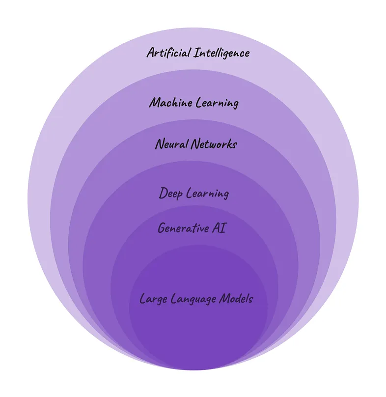
Ajuster le modèle pour qu’il colle aux données (réduire l’erreur), sans “apprendre par cœur” (éviter le sur-apprentissage).
Illustration de Caprasi, C. (2023). Artificial Intelligence, Machine Learning, Deep Learning, GenAI and more. Women in Technology - Medium. https://medium.com/womenintechnology/ai-c3412c5aa0ac
Comprendre comment fonctionnent les LLMs
La limite du “sac de mots” (Bag-of-Words)
L’approche Bag-of-Words se contente de compter les mots, mais ignore leur sens et leur ordre.
Le problème : le modèle ne comprend pas que des mots sont sémantiquement proches.
Exemple : pour lui, “roi” est aussi éloigné de “reine” que de “camion”.
Le défi : Comment la machine peut-elle apprendre que “excellent” est proche de “superbe” ?
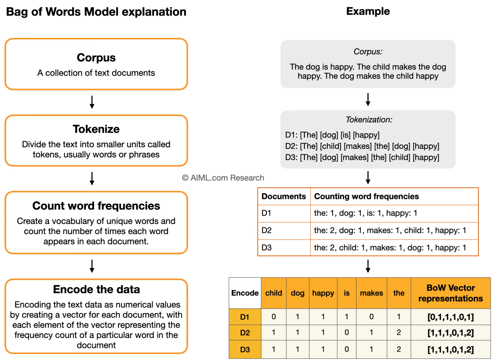
L’idée de l’embedding : représenter des concepts par des nombres
Avant de voir comment une machine comprend les mots, imaginons comment représenter une personne en chiffres. C’est le principe de l’embedding (ou “plongement”).
1. Une seule dimension
Un test peut donner un score unique, par exemple sur l’axe introversion/extraversion. Ce score devient la première coordonnée du “vecteur de personnalité”.
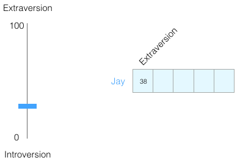
2. Ajouter de la complexité
On change d’échelle : on normalise les valeurs pour s’intéresser uniquement à la direction du vecteur (qui porte le sens), pas à sa longueur.
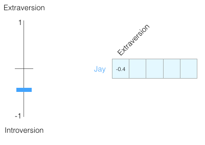
3. Vers N dimensions
Les tests comme le Big Five utilisent au moins 5 dimensions. En machine learning, on peut en avoir des milliers. La personnalité devient un vecteur de nombres, chaque valeur représentant un score.
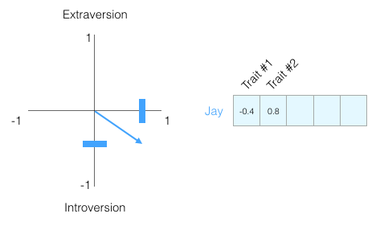
L’idée fondamentale de l’embedding
Un concept complexe (une personne, un mots, des phrases) peut être représenté par un vecteur numérique.
Avantage : les machines peuvent mesurer les similarités en comparant ces vecteurs.
Source des illustrations Word2Vec: Alammar, J. (2019). The Illustrated Word2Vec. https://jalammar.github.io/illustrated-word2vec/
La révolution Word2Vec : le sens par le contexte
“You shall know a word by the company it keeps” (Firth 1957)
Un mot prend son sens des mots qui l’entourent (Harris 1954).
Cette idée inspire les modèles d’embeddings, où chaque mot est représenté par un vecteur numérique.
- Bengio et al. (2003) ont proposé le premier modèle neuronal apprenant ces représentations de mots.
- Mikolov et al. (2013) ont simplifié cette approche avec Word2Vec, rendant l’apprentissage des vecteurs rapide et efficace.
Le résultat : les mots apparaissant dans des contextes similaires finissent par avoir des vecteurs proches dans l’espace sémantique.
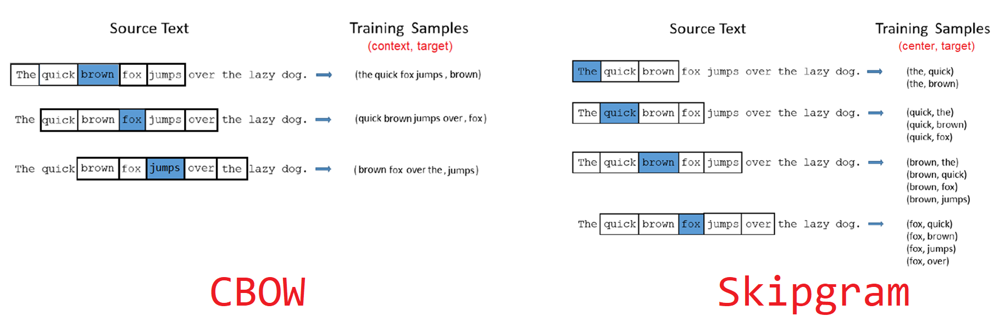
Visualiser un embedding 1/3
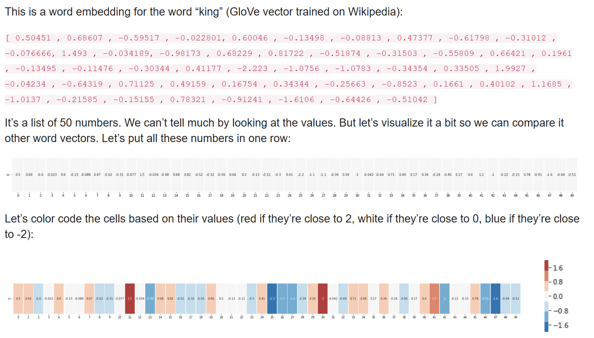
Visualiser un embedding 2/3
Chaque mot est représenté par un vecteur de nombres (par ex. 50 ou 300 dimensions). Pris séparément, ces valeurs n’ont pas de sens pour nous. Mais en comparant plusieurs mots, on voit apparaître des motifs de similarité.
- man et woman → vecteurs proches.
- king et queen → partagent des dimensions → idée de royauté.
- boy et girl → proches sur d’autres dimensions → idée de jeunesse.
- water → se distingue nettement des mots “personnes”.
💡 Les embeddings capturent des régularités invisibles, uniquement à partir des contextes.
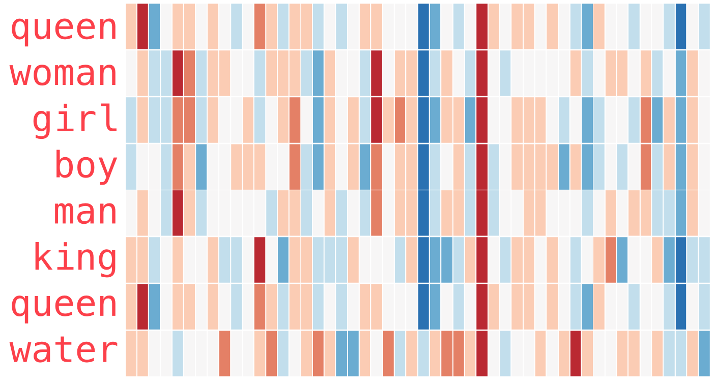
Visualiser un embedding 3/3
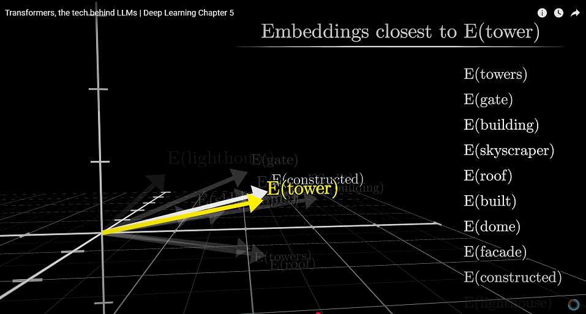
Source : Transformers, the tech behind LLMs - Deep Learning, Chapter 5.
Vidéo Youtube
Analogies vectorielles
Les vecteurs de mots se combinent algébriquement. Ce n’est pas magique : la géométrie des vecteurs encode des relations sémantiques et syntaxiques.
- V(roi) - V(homme) + V(femme) ≈ V(reine)
- V(Paris) - V(France) + V(Italie) ≈ V(Rome)
Avec des bibliothèques comme Gensim en python ou word2vec en R, on peut réellement calculer ces analogies et retrouver les mots les plus proches.
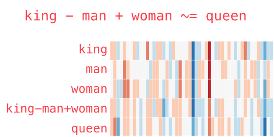
Applications concrètes possibles pour une revue de littérature
Formuler sa recherche comme une vraie question, pas juste une liste de mots-clés.
“Scanner” 100 abstracts en 1 minute pour en extraire les méthodologies et conclusions.
Se faire recommander des articles sémantiquement proches d’articles identifiés comme fondateurs.
Et surtout comprendre la logique interne de la plupart outils IA utilisés ensuite.
Applications Embeddings (SLR + Master Dauphine)
Démo images_interactives
Le mécanisme d’attention (Vaswani et al. 2017)
L’idée fondamentale des Transformers est simple : pour comprendre un mot, le modèle doit porter son attention sur les autres mots importants de la phrase.
Imaginez que pour chaque mot, on fasse un éclairage 🔦 sur les autres termes qui lui donnent son sens.
Exemple :
"Le livreur a déposé le colis devant la porte, car il était trop lourd."
Pour comprendre le mot “il”, le modèle va apprendre à porter son attention sur :
- “colis” (très forte attention : c’est l’antécédent le plus probable !)
- “livreur” (un peu d’attention : c’est un autre acteur, mais moins pertinent pour “il”)
- “lourd” (attention moyenne : c’est une caractéristique qui justifie le “il”)
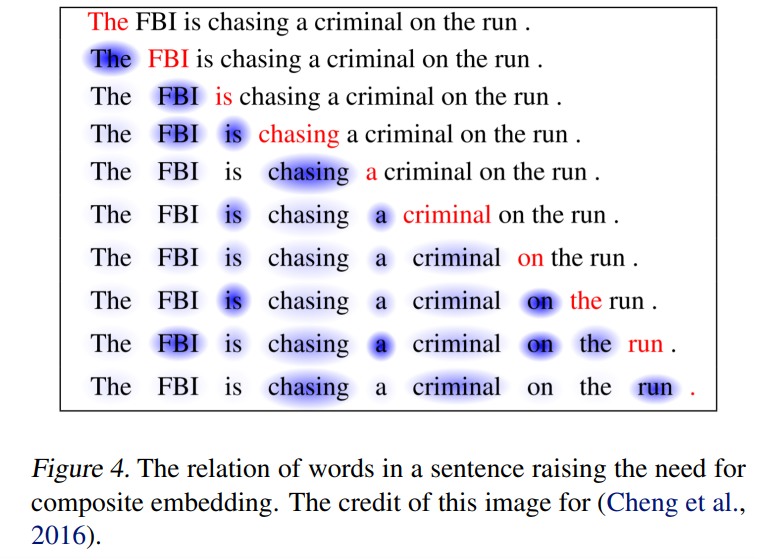
La grande différence
Contrairement à Word2Vec qui regarde une petite fenêtre fixe, l’attention permet de créer des liens sémantiques entre des mots même très éloignés dans la phrase. Le modèle apprend quelles parties du contexte sont les plus pertinentes.
Pour aller plus loin : les Transformers (3Blue1Brown (Grant Sanderson))
Ces deux vidéos sont fortement recommandées pour une compréhension visuelle et approfondie des concepts clés des Transformers.
L’architecture “Transformers”
Cette vidéo offre une vue d’ensemble de l’architecture Transformer, le moteur des grands modèles de langage modernes.
Le mécanisme d’Attention
Cette seconde vidéo se concentre sur le concept crucial de l’attention, permettant au modèle de “comprendre” le contexte.
Comment un LLM apprend-il ? Le jeu du mot suivant
L’entraînement d’un LLM comme GPT-4 repose sur un principe simple, répété des milliards de fois sur un corpus gigantesque.
La tâche : prédire le token le plus probable.
On lui donne un début de phrase (un “prompt”) :
"Le client a contacté le service après-vente car son produit était..."Le modèle calcule une distribution de probabilité sur l’ensemble de son vocabulaire pour le mot suivant.
défectueux: 15% de probabilitécassé: 12% de probabilitélivré: 5% de probabilitéincroyable: 0.1% de probabilitémanger: 0.0001% de probabilité...
De la prédiction à l’émergence des capacités
En répétant ce “jeu” des milliards de fois, le modèle apprend les régularités du langage : grammaire, faits, styles d’écriture, voire certaines capacités de raisonnement émergentes (Zoph et al. 2022).
Ce type d’apprentissage, fondé sur la prédiction à partir de texte brut, est appelé auto-supervision (self-supervised learning).
Visualisation de GPT-3 (3Blue1Brown (Grant Sanderson))
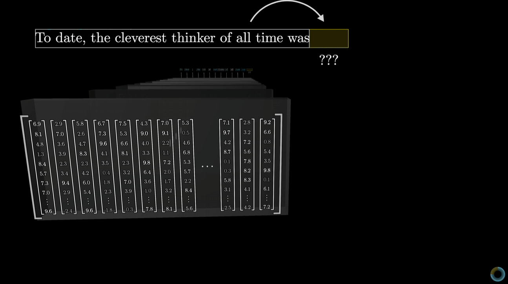
Quel LLM choisir ? Quelques concepts clés
Pourquoi ces concepts sont cruciaux ?
- Ils expliquent pourquoi certains outils excellent dans certaines tâches
- Ils vous aident à choisir le bon outil pour votre besoin
- Ils vous permettent d’anticiper les limites avant de les rencontrer
- Ils constituent le vocabulaire de base pour comprendre les nouveautés à venir
Quelques concepts clés
- Fenêtre de contexte : La mémoire de travail de l’IA
- RAG : l’IA accède à des informations externes
- Fine-tuning : comment spécialiser/adapter un modèle
- Agents : l’IA qui agit de manière autonome en utilisant des outils
Comment évaluer les performances des LLMs ?
Il existe une multiplicité de benchmarks, chacun ciblant des compétences différentes (connaissances, raisonnement, recherche d’info, agenticité, etc.).
Exemples représentatifs et vérifiés :
- MMLU - 57 matières académiques, QCM de culture générale et spécialisée (Hendrycks et al. 2021).
- GPQA - Questions de niveau doctorat en physique/chimie/biologie, « Google-proof » (Rein et al. 2023).
- GAIA - Benchmark d’agents pour questions “réelles” nécessitant outils, web et multimodalité (Mialon et al. 2023).
- MathArena - Plateforme/leaderboard évaluant le raisonnement mathématique sur concours/récents (IMO, etc.) (Balunović et al. 2025).
- BEIR - Évaluation IR (recherche d’info) hétérogène, 18 datasets, zéro-shot (Thakur et al. 2021).
- LoTTE - Évaluation IR sur sujets long-tail (StackExchange), complément de BEIR (Santhanam et al. 2021).
💡 Interprétez toujours les scores par rapport à la tâche ciblée : un bon score MMLU ne garantit pas de bonnes performances en recherche d’articles (IR/RAG), et inversement.
Le problème des benchmarks des LLM et des agents
“Today’s benchmarks measure what is easy to measure, not what matters.”
(Kapoor et al. 2024)
- Les benchmarks actuels donnent souvent une image trop flatteuse des performances des agents IA.
- Ils ne mesurent pas toujours les éléments essentiels comme :
- le coût réel (temps, tokens),
- la robustesse face à des variations imprévues,
- la reproductibilité des résultats.
- Ce qui brille dans un leaderboard n’est pas forcément ce qui fonctionne dans la vraie vie.
Une vidéo intéressante sur ce sujet ⬇️
« En fait, les LLMs ne stagnent pas du tout » - Vidéo de Micode avec Grégoire Mialon et Clémentine Fourrier.
https://www.youtube.com/watch?v=biZX5cnQ_UU
1. La fenêtre de contexte : la mémoire limitée des LLMs
“Language models struggle to use information located in the middle of long contexts, a phenomenon known as ‘lost in the middle’.” (Liu et al. 2023)
La fenêtre de contexte correspond à la quantité maximale de texte qu’un LLM peut traiter en une seule fois
(prompt + réponse), mesurée en tokens. Les capacités des LLMs évoluent très vite.
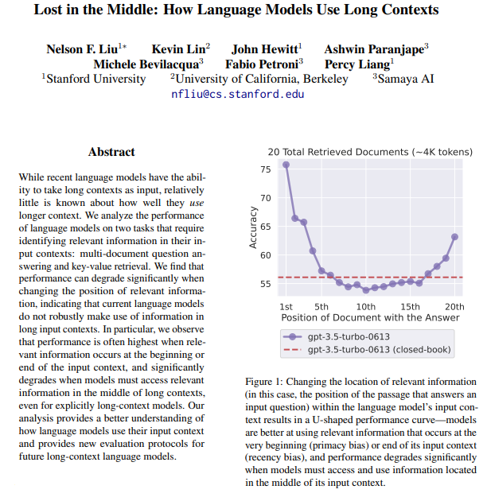
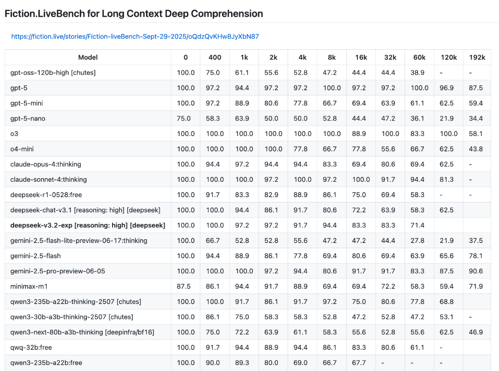
2. RAG
Le Retrieval-Augmented Generation combine recherche et génération.
- Le LLM cherche d’abord des informations dans une base externe (web, PDFs, articles…).
- Il injecte ces informations dans son contexte.
- Il génère une réponse basée sur ces sources.
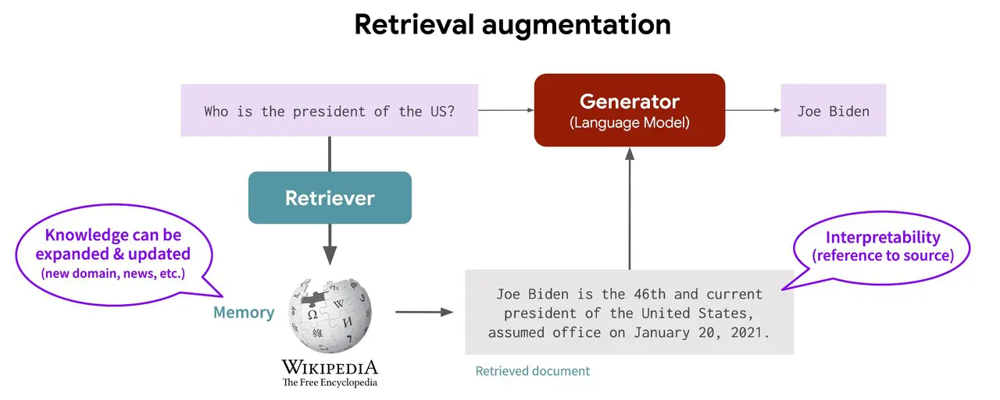
Illustration d’Akriti Upadhyay - Efficient Information Retrieval with RAG Workflow (Medium, 2023).
https://medium.com/@akriti.upadhyay/efficient-information-retrieval-with-rag-workflow-afdfc2619171
3. Transfer learning et fine-tuning
« Technique consistant à spécialiser un modèle d’IA pré-entraîné à l’accomplissement d’une tâche spécifique. » (CNIL)
- Transfer learning = concept général : réutiliser un modèle pré-entraîné pour une tâche ou un domaine cible.
- Fine-tuning = méthode concrète de transfer learning : ré-entraîner (partiellement ou totalement) les poids du modèle sur des données spécifiques.
Exemples illustratifs
SciBERT : Modèle BERT (Devlin et al. 2019) pré-entraîné et affiné sur des articles scientifiques pour mieux traiter le texte biomédical (Beltagy, Lo, and Cohan 2019).
SiEBERT : Modèle généraliste affiné sur 272 jeux de données en anglais pour créer un classificateur robuste (analyse de sentiment) (Hartmann et al. 2023).
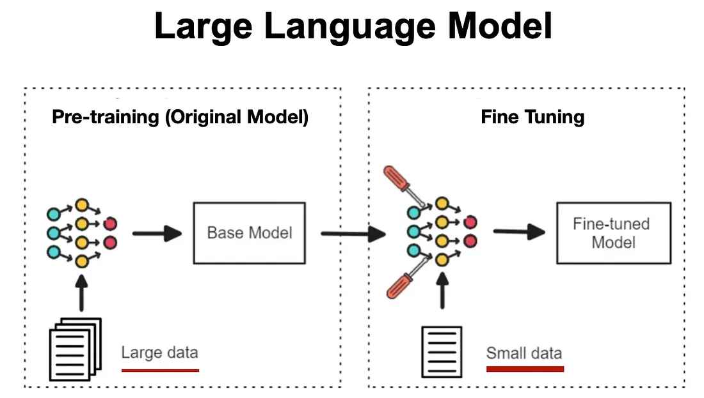
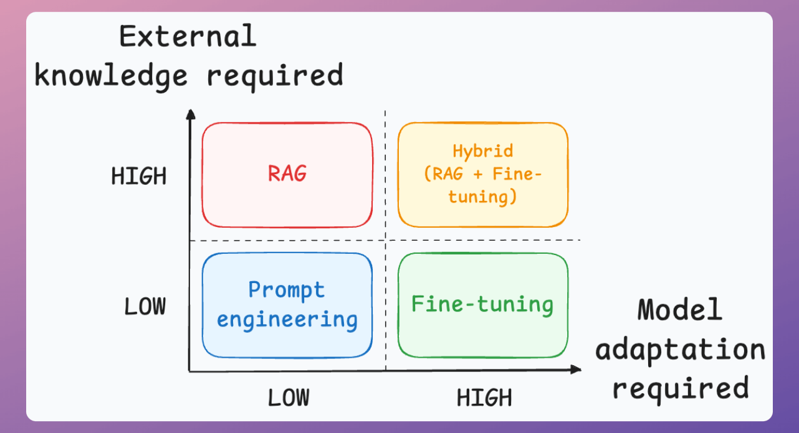
4. Les Agents : l’IA qui agit de manière autonome
“An autonomous agent is a system situated within and a part of an environment that senses that environment and acts on it, over time, in pursuit of its own agenda and so as to effect what it senses in the future.” - (Franklin and Graesser 1997)
- Un agent IA combine raisonnement, action et interaction avec un environnement.
- Les LLM agents représentent une évolution : ils planifient, mémorisent, utilisent des outils, collaborent et s’adaptent.
- Ils constituent une brique centrale pour l’automatisation avancée de tâches, y compris pour la revue de littérature ou la recherche scientifique.
De l’émergence à la structuration des agents LLM
- 2022 : apparition des premiers agents combinant raisonnement et action (Yao et al. 2023).
- 2023 : diffusion grand public avec les premières implémentations autonomes, notamment via AutoGPT.
- 2024–2025 : agents dotés de mémoire, coordination et rôles spécialisés (Wang et al. 2024; Luo et al. 2025).
Pour aller plus loin
- Une liste actualisée des travaux est disponible ici : Awesome Agent Papers.
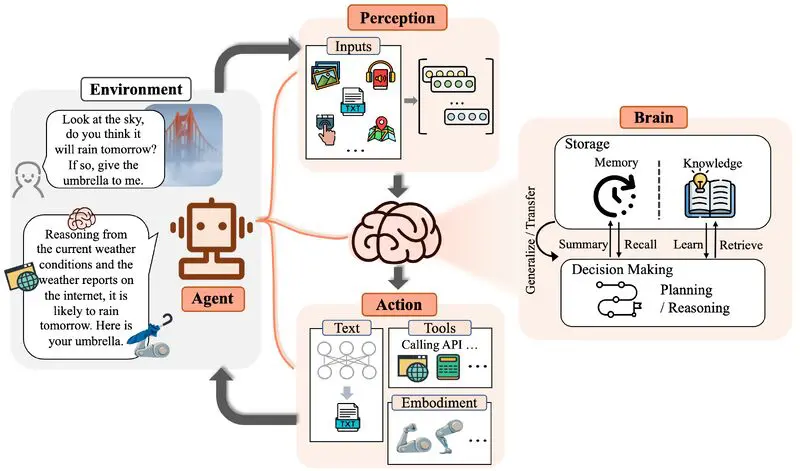
Illustration de Data Science Dojo - “LLM Agents to Empower Language Models”.
https://datasciencedojo.com/blog/llm-agents-to-empower-language-models/
Le coût des LLMs
Modèles et abonnements en octobre 2025
| Service | Prix public | Ce que ça débloque / note | Lien |
|---|---|---|---|
| ChatGPT Free | 0 € | Accès de base | Site |
| ChatGPT Plus | ~20 $/mois (facturé en devise locale, TVA selon pays) | Accès élargi aux modèles (GPT-4/o1), fonctionnalités avancées | Site |
| Claude Pro | 17 $/mois (annuel) ou 20 $/mois (HT) | Plus d’usage, modèles Claude 3.x/4.x, fonctionnalités pro | Site |
| Perplexity Pro | 20 $/mois | Accès à des modèles avancés (OpenAI, Anthropic, etc.), recherche approfondie, limites Pro accrues (300+ recherches/jour), gestion de fichiers & collections | Site |
| Google AI Pro (Gemini) | 21,99 €/mois | Gemini 2.5 Pro, NotebookLM, 2 To, Deep Research | Site |
| Mistral – Le Chat Pro | 17,99 €/mois (7,19 € pour étudiants, 12 mois) | Version Pro de “Le Chat” | Site |
| Elicit Plus | 10 $/mois (annuel) ou 12 $/mois | Extraction/synthèse, export de données | Site |
| Elicit Pro | à partir de 42 $/mois (annuel) | Workflows RL/SLR, quotas plus importants | Site |
| DeepSeek (API) | 0,028 $/M tokens (cache hit) - 0,28 $/M (miss) - 0,42 $/M output | Site |
L’art du Prompt Engineering - exemple pour revue de littérature
Donner un rôle clair → aide l’IA à adopter une “posture experte”
Montré comme une bonne pratique dans plusieurs études de synthèse (Vatsal and Dubey 2024; Sahoo et al. 2025)Montrer un exemple (few-shot prompting) → augmente fortement la qualité et la cohérence des réponses
Effet mesuré dans des benchmarks sur des tâches complexes (Vatsal and Dubey 2024)Demander un raisonnement étape par étape (chain-of-thought) → réduit les erreurs factuelles et améliore la profondeur
Résultats solides dans les grandes revues sur le prompt engineering (Schulhoff et al. 2025)Spécifier le format de sortie → favorise des réponses exploitables directement (tableaux, résumés structurés)
Particulièrement efficace dans les tâches d’extraction d’informations (Jin et al. 2025)
Outils utiles pour la revue de littérature
Bien sûr il existe les LLMs bien connus comme ChatGPT, Claude, Gemini, Mistral, etc. mais certains autres outils spécialisés (et de nombreux autres) :
| Outil | Fonction principale | Cas d’usage typique | Lien |
|---|---|---|---|
| Perplexity.ai | Moteur de recherche conversationnel | Obtenir une vue d’ensemble rapide et sourcée sur un sujet, accéder à des modèles récents et à la recherche web temps réel | perplexity.ai |
| Elicit | Recherche sémantique et extraction automatique d’informations clés | Construire une bibliographie structurée, extraire méthodologies et résultats | elicit.com |
| NotebookLM | Analyse de documents personnels (RAG) | Interroger vos propres articles PDF et croiser les résultats | notebooklm.google |
| Scite.ai | Analyse de la qualité des citations (soutient / mentionne / conteste) | Évaluer la robustesse des articles et des théories | scite.ai |
| Connected Papers | Visualisation des liens entre articles | Explorer le réseau scientifique autour d’un article de départ | connectedpapers.com |
| Consensus | Synthèse automatisée à partir d’articles scientifiques | Obtenir des réponses à des questions précises basées sur la littérature | consensus.app |
| ArtiRev | Plateforme académique française pour les revues de littérature | Identifier et organiser les articles d’un champ de recherche | artirev.fr |
| Litmaps | Cartographie dynamique de la littérature | Visualiser et suivre l’évolution d’un champ de recherche dans le temps | litmaps.com |
DÉMONSTRATIONS - thèmes possibles
- Comment l’usage de l’intelligence artificielle générative transforme-t-il la relation entre marques et consommateurs ?
- Dans quelle mesure les influenceurs sur les réseaux sociaux façonnent-ils les comportements de consommation des adolescents ?
- Comment les consommateurs perçoivent-ils les campagnes de communication promouvant la responsabilité environnementale des marques ?
- Quels sont les effets du télétravail et du digital nomadisme sur la communication interne et la culture organisationnelle ?
- Comment la marque employeur influence-t-elle la perception et l’engagement des candidats à l’ère de la digitalisation et des nouvelles attentes sociétales ?
- Pour une marque, est-ce pertinent d’endosser via sa communication des combats portés par des mouvements sociaux (féminisme, antiracisme, écologie radicale, etc.) ?
- Est-ce que tous les bad buzz provoquent des crises de réputation de marque ?
Le risque majeur : hallucinations et références fantômes
Le problème le plus documenté des LLM est leur tendance à inventer des informations crédibles (hallucinations) et à fabriquer des références qui semblent plausibles mais sont inexistantes (Tosi 2025).
- Références fantômes : un article a rapporté qu’un outil IA a généré une référence bibliographique complètement inventée lors d’une revue de littérature systématique (SLR) (Tosi 2025).
- Conclusions erronées : la synthèse produite par l’IA peut être inexacte, déformer les conclusions des sources originales ou manquer de nuances et d’analyse critique (Li et al. 2025; Tosi 2025).
- Dépendance au prompt : de légères variations dans la formulation d’une requête (le “prompt”) peuvent radicalement changer la qualité, la pertinence et même la véracité des résultats obtenus (Baumann et al. 2025).
- Vérifier chaque source : un DOI, un titre ou un auteur doit correspondre à une publication réelle et accessible.
- Consulter l’article original avant de citer ou de s’approprier une conclusion synthétisée par une IA.
- Privilégier les outils basés sur un corpus fermé (RAG), qui citent leurs sources OU LLM + article en contexte.
Le risque caché : le LLM Hacking
Le “LLM Hacking” décrit comment la sensibilité extrême des IA aux prompts permet, intentionnellement ou non, d’obtenir des conclusions statistiques erronées à partir des mêmes données (Baumann et al. 2025).
En testant quelques configurations de modèles ou de prompts, il devient possible de présenter presque n’importe quel résultat comme statistiquement significatif.
- Faux positifs : sur des hypothèses où il n’existe en réalité aucun effet, il est possible de fabriquer un résultat statistiquement significatif (p < 0.05) dans 94,4 % des cas en choisissant la bonne combinaison modèle/prompt (Baumann et al. 2025).
- Inversion des résultats (erreur de type S) : il est possible de trouver un effet significatif dans la direction opposée à la réalité dans 68,3 % des cas (Baumann et al. 2025).
- Indétectable a posteriori : une analyse manipulée via le prompting peut sembler méthodologiquement rigoureuse, rendant la fraude presque impossible à détecter pour un évaluateur externe.
Implication
La reproductibilité scientifique est menacée. Sans une transparence totale sur les prompts et modèles testés, les résultats d’une recherche assistée par IA peuvent être non fiables.
Biais “silencieux” et “couverture” limitée
Un LLM n’est jamais neutre. Il amplifie les biais des données sur lesquelles il a été entraîné.
Biais
- Biais de corpus : surreprésentation de la recherche anglo-saxonne et des paradigmes scientifiques dominants, au risque de créer une monoculture intellectuelle.
- Biais de popularité : tendance à privilégier les articles très cités. Un outil IA a ainsi manqué 100 % des 32 études primaires d’une revue systématique, ne sélectionnant que des articles plus anciens et trois fois plus cités en moyenne que ceux de la sélection humaine (Tosi 2025).
Couverture
- Connaissances datées : l’IA ne connaît rien au-delà de sa date de “cut-off” (pas toujours rendue publique).
- L’angle mort des paywalls : l’accès est limité aux textes en libre accès (résumés, pre-prints), ignorant une part massive de la littérature scientifique.
- Couverture inégale des disciplines : les domaines riches en données textuelles sont mieux couverts.
Enjeux éthiques et responsabilité académique
L’utilisation de l’IA engage la responsabilité du chercheur bien au-delà de la simple citation.
- Confidentialité des données : ne jamais soumettre de données de recherche sensibles, confidentielles ou non publiées sur des services d’IA publics.
- Risque de déresponsabilisation morale : déléguer une tâche à une IA, surtout via des instructions vagues, peut augmenter les comportements malhonnêtes. Les agents IA sont bien plus enclins à suivre des instructions contraires à l’éthique que les humains (Köbis et al. 2025).
- Transparence et paternité : toujours déclarer l’utilisation d’outils d’IA dans la section méthodologique. Un agent conversationnel ne peut être crédité comme auteur.
- Empreinte environnementale : l’entraînement et l’utilisation des LLM consomment une quantité d’énergie considérable. La question de l’étiquetage énergétique des modèles d’IA commence à se poser (Luccioni et al. 2024).
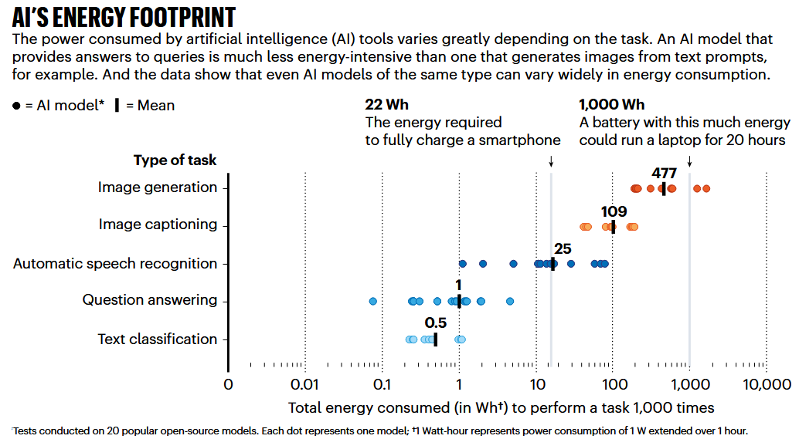
Quel gain de temps avec les LLMs ?
L’argument principal en faveur de l’IA est une accélération radicale du processus de recherche. Le schéma ci-contre montre comment l’IA s’intègre dans les étapes les plus chronophages d’une revue systématique.
- Filtrage accéléré : un outil comme ASReview a permis de réduire de 77 % le temps de sélection (screening) des résumés dans une revue systématique (Dijk et al. 2023).
- Synthèse en temps record : dans des études contrôlées, des agents IA interactifs (InsightAgent) ont permis à des cliniciens de réaliser une revue systématique complète en environ 1h30 (Qiu et al. 2025).
- De plusieurs jour à quelques minutes : le filtrage de plus de 8 300 articles a été réalisé en moins de 10 minutes par une architecture multi-LLM (Joos, Keim, and Fischer 2025).
Le rôle de l’IA
L’IA est un accélérateur de recherche qui automatise les tâches répétitives, mais ne remplace pas le jugement humain pour la planification et l’analyse critique.
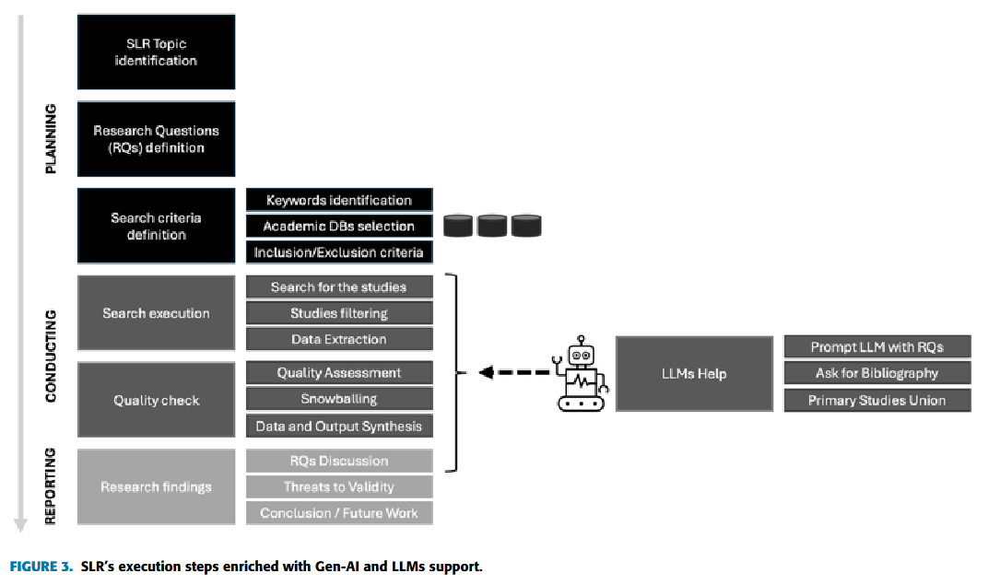
Le match : précision contre complétude (rappel)
Pour évaluer un outil de recherche, deux métriques sont essentielles.
Le Rappel (Recall / Sensibilité)
La capacité à trouver tous les documents pertinents.
- Question : ai-je raté des articles importants ?
- Objectif : être exhaustif. 100 % = aucun article pertinent manqué.
- Risque : un faible rappel mène à des conclusions biaisées.
La Précision (Precision)
La capacité à ne retourner que des documents pertinents.
- Question : combien de “bruit” dois-je trier ?
- Objectif : être pertinent. 100 % = tous les résultats sont utiles.
- Risque : une faible précision fait perdre du temps.
Un outil très exhaustif (haut rappel) ramène souvent beaucoup de bruit (basse précision). Un outil très ciblé (haute précision) peut omettre des références importantes (bas rappel).
Évidence empirique
Comparativement aux IA testées (Elicit, SciSpace), WoS/Scopus obtiennent de meilleurs taux de précision/qualité, l’IA ramenant plus de références uniques mais souvent moins bien classées (Tomczyk et al.).
Un bilan nuancé quant aux performances
Les performances des IA varient énormément selon les outils et les méthodes.
des performances parfois excellentes…
- Consensus multi-LLM : en faisant voter plusieurs modèles d’IA, une étude a atteint un rappel de 98,8 %, un taux d’erreur inférieur à celui d’un humain (Joos, Keim, and Fischer 2025).
- Systèmes interactifs supervisés : avec l’aide d’un expert, un outil peut atteindre 98,5 % de rappel (Qiu et al. 2025).
…mais des échecs critiques et des biais tenaces.
- Elicit n’a atteint en moyenne qu’un rappel de 39,5 % sur quatre études de cas, le rendant insuffisant pour une revue systématique exhaustive (Lau and Golder 2025).
- Dans une autre étude, un outil IA a totalement manqué les 32 études primaires d’une revue, à cause d’un fort biais de popularité (Tosi 2025).
L’IA peut précisément omettre l’essentiel. Sans supervision humaine et validation croisée, le gain de temps peut se payer par une perte de pertinence et d’exhaustivité.
Conclusion
L’IA ne remplace pas le chercheur, elle transforme son rôle.
- l’IA est un levier de productivité majeur, mais non dénué de risques importants.
- la vigilance critique (biais, hallucinations, hacking) et la vérification humaine sont incontournables.
- choisir le bon outil pour la bonne tâche est essentiel (exploration vs. synthèse vs. filtrage).
- l’avenir est à la collaboration homme-machine, où l’expertise humaine guide la puissance de l’IA.
Comment la machine “compare” les personnalités ?
Maintenant que chaque personne est un vecteur de nombres, on peut utiliser un outil mathématique simple pour calculer à quel point elles sont “proches” en termes de personnalité : la similarité cosinus.
1. L’intuition : l’angle 📐
L’idée n’est pas de mesurer la distance entre les points, mais plutôt l’angle entre les flèches (vecteurs).
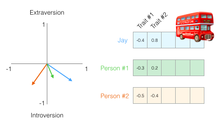
2. Le calcul en action
La fonction
cosine_similaritynous donne un score entre -1 (opposés) et 1 (identiques).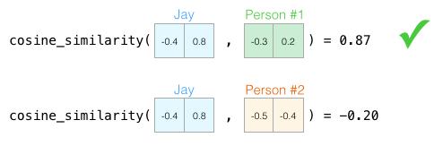
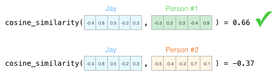
On voit que Jay est bien plus similaire à la Personne #1 qu’à la Personne #2, que ce soit avec 2 ou 5 dimensions !
L’avantage clé
Peu importe le nombre de dimensions (2, 5, plusieurs centaines ou milliers pour les modèles de langue !), la similarité cosinus nous donne un score unique et fiable pour quantifier la ressemblance entre deux concepts. C’est la base de nombreuses applications : moteurs de recommandation, recherche sémantique… et bien plus encore.